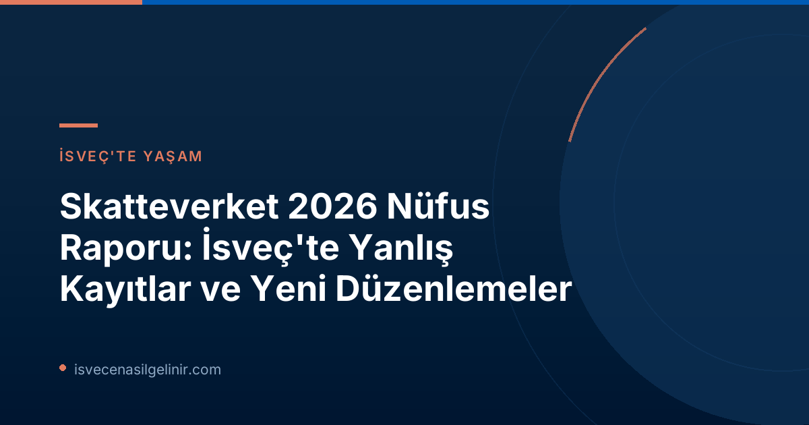

İsveç Nüfusunda Son Durum: Skatteverket'ten Yeni Rapor Detayları
Giriş ve Genel Bakış
Skatteverket'in 18 Haziran 2026 tarihinde yayınladığı rapora göre, 2025 yılsonu itibarıyla İsveç'te 10.605.529 kişi kayıtlı bulunuyor. Bu rakam bir önceki yıla göre yaklaşık 18.000 kişilik bir artışı temsil ediyor. Ülkeye göç yoluyla yapılan kayıtlar %24 oranında azalırken, doğum yoluyla yapılan kayıtlar geçen yılki seviyelerini korudu. Raporun en dikkat çekici bulgularından biri ise nüfusun %2-3'lük bir kısmının yanlış kayıtlı olduğunun tahmin edilmesi.Yanlış Kayıtların Boyutu ve Etkileri
Skatteverket'e göre, doğru ikametgah kaydı, İsveç'in refah sisteminin temelini oluşturuyor. Yanlış veya eksik kayıtlar, yanlış ödemelere, hatalı vergilendirmeye ve kimliklerin kötüye kullanılmasına yol açarak topluma büyük zararlar verebiliyor.Skatteverket Raporundan Önemli Sayısal Veriler
| Kategori | Sayı (Tahmini) | Açıklama |
|---|---|---|
| Genel Nüfus | 10.605.529 | 2025 yılsonu itibarıyla İsveç'te kayıtlı kişi sayısı. |
| Fazla Kayıtlı Kişiler | En az 65.000 | Ülke dışına taşındığı halde hala İsveç'te kayıtlı görünen kişiler. |
| Eksik Kayıtlı Kişiler | En az 23.500 | Gereklilikleri karşıladığı halde İsveç'te kayıtlı olmayan kişiler. |
| Yanlış Adres Kayıtlı | 96.000 – 154.000 | Yanlış adreste kayıtlı olduğu tahmin edilen kişiler. |
Koordinasyon Numaraları (Samordningsnummer) ve Kimlik Doğrulama Süreçleri
Samordningsnummer Ne Anlama Geliyor?
Samordningsnummer, İsveç'te kalıcı olarak ikamet etmeyen ancak bir şekilde resmi işlemler için bir kimlik numarasına ihtiyaç duyan kişilere verilen bir tür geçici kimlik numarasıdır. Bu numaralar, İsveç'te çalışan, eğitim gören veya kısa süreli ikamet eden kişiler için hayati öneme sahiptir.Gelişen Kimlik Doğrulama ve Eksiklikler
Yeni rapora göre, 2025 yılsonu itibarıyla İsveç'te 477.113 aktif samordningsnummer bulunmaktaydı. Bu numaralar üç farklı kimlik seviyesine sahiptir: "onaylanmış (styrkt)", "muhtemel (sannolik)" veya "belirsiz (osäker)". Sevindirici bir gelişme olarak, kimliğini onaylayan kişilerin oranı 2023'teki %12'den 2025'te %45'e yükseldi. Ancak, Michael Högback'ın belirttiği gibi, maalesef tüm kurumlar kendi sistemlerinde bir numaranın onaylanıp onaylanmadığını görüntüleyemiyor. Bu durum, mevcut bilginin tam olarak kullanılmamasına neden oluyor ve iyileştirilmesi gereken bir alan olarak öne çıkıyor.Kimlik Numarası Olmayan Kişiler: Görünmez Nüfus
Skatteverket raporu, İsveç'te kişisel kimlik numarası (personnummer) veya samordningsnummer olmadan yaşayan önemli bir nüfusa da ışık tutuyor. Bu "görünmez" nüfusun detayları şu şekilde:İsveç'te Kimlik Numarası Olmayan Kişi Sayıları
| Kategori | Sayı (Tahmini) |
|---|---|
| Toplam Kimlik Numarası Olmayan | 110.000 – 185.000 |
| Bilinen İkamet & Yasal Hak Sahibi | 86.400 |
| Bilinen İkamet & Yasal Hak Sahibi Değil | 22.400 |
| İkameti Bilinmeyen | ~30.000 |
Skatteverket'in Önerileri ve Geleceğe Yönelik Adımlar
Biyometrik Verilerin Kullanımı ve Güvenlik
Suçla mücadele ve sahte kimlik kullanımını önlemek amacıyla Skatteverket, biyometrik verilerin (yüz görüntüsü ve parmak izi gibi) kullanımını artırmayı öneriyor. Bu verilerin kişinin yaşamı boyunca saklanması ve suçla mücadele eden kurumlarla paylaşılması, özellikle organize suç çetelerinin yanlış kimlikleri kullanmasını engellemede büyük fayda sağlayabilir. Bu öneri, hem kayıtlı kişiler hem de samordningsnummer sahipleri için geçerli.Mevzuat Düzenlemeleri ve Sistem İyileştirmeleri
Skatteverket, yanlış kayıt oranının yeterince azalmadığını vurgulayarak, daha fazla kontrol, teknik destek ve kurumlar arasında daha iyi bilgi alışverişi ve işbirliğine ihtiyaç olduğunu belirtiyor. Kurumun önerileri arasında şunlar yer alıyor:- Skatteverket'in biyometrik veri kullanımını artırmasına, verileri kişinin yaşamı boyunca saklamasına ve işbirliği yapan kurumlarla paylaşmasına izin verilmelidir.
- Samordningsnummer ile bağlantılı olarak bir kişinin İsveç'te ikamet etme ve çalışma hakkına ilişkin açık bilgiler sağlanmalı ve bu, yanlış anlaşılmaları ve kötüye kullanımı azaltmak için kamuoyuna duyurulmalıdır.
- Hükümet, samordningsnummeri işleyen kurumlara, bunlarla bağlantılı mevcut bilgileri alabilmeleri için sistemlerini adapte etmeleri talimatını vermelidir.
- Kısa süreli oturum izni başvurusunda bulunan kişilere genellikle samordningsnummer verilmelidir.
- 35 yıl önce yürürlüğe giren ve toplumda büyük değişiklikler yaşanan Nüfus Kayıt Yasası'nın (Folkbokföringslagen) açık, amaca uygun ve modern bir yasa oluşturmak amacıyla gözden geçirilmesi gerekmektedir.
Yanlış Adres Kayıtları ve Göçmenlik Bildirimleri
Michael Högback, toplum için büyük maliyet riskleri taşıyan bir diğer alanın da yurt dışına taşınan ancak hala İsveç'te kayıtlı görünen kişiler olduğunu belirtiyor. Skatteverket, bu alandaki kontrollerine yüksek öncelik veriyor ve bu tür yanlış kayıtların önüne geçmek için çalışmalarını sürdürüyor.Sonuç ve İsveç'te Doğru Kayıt Olmanın Önemi
Skatteverket'in 2026 nüfus raporu, İsveç'in nüfus kayıt sistemindeki güçlü yönleri ve iyileştirilmesi gereken alanları açıkça ortaya koyuyor. Doğru ve güncel kayıtlar, yalnızca bireyler için değil, tüm İsveç toplumu için hayati öneme sahiptir. Bu rapor, daha güvenli, adil ve etkili bir refah devleti için atılması gereken adımları somut bir şekilde gözler önüne seriyor. Raporun önerileri hayata geçirildiğinde, İsveç'in nüfus kayıt sistemi daha da güçlenecek ve bu da ülkenin genel işleyişine olumlu katkı sağlayacaktır.Referanslar
İsveç'te Yaşam ve Vatandaşlık Hakkında Daha Fazla Bilgi Edinin
İsveç'e göç etmeyi, burada yaşamayı veya vatandaşlık almayı mı düşünüyorsunuz? sverigemedborgarskapsprov.com, İsveç'teki yaşam, yasal düzenlemeler ve vatandaşlık süreçleri hakkında kapsamlı bilgiler sunar. Uzman ekibimizle aklınızdaki tüm sorulara cevap bulun.